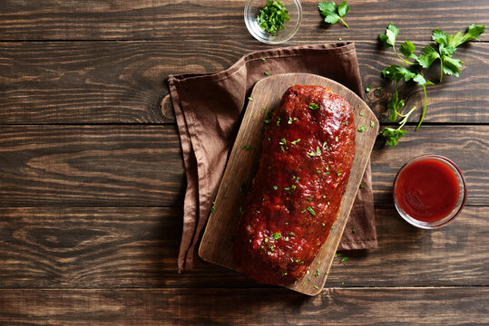

Home
Meatloaf

Description
What's better than a loaf of bread? Easy. A loaf of meat (and the best part is that it contains bread as well).
With this simple yet delicious recipe you can feed yourself delicious and filling meat for days.
And as a special treat, we will be using barbecue sauce to bring out an extra savory-sweet flavor.
Ingredients
- 1 lb. ground beef (80/20 is best)
- 1 egg, beaten
- 1/4 cup of barbecue sauce (or more if desired)
- 1/4 cup of milk
- 1/2 cup plain breadcrumbs
- 1/4 cup of shredded parmesan cheese
- 1 clove of garlic, minced
- 1/2 tbsp. onion powder
- 1/2 tbsp. garlic powder
Steps
- Preheat oven to 400 degrees F.
- Spray loaf pan with a non-stick cooking spray.
- In a large mixing bowl, add ground beef, egg, about half of the bbq sauce, milk, breadcrumbs, cheese, miced garlic, onion powder, and garlic powder.
- Mix ingredients together by hand until well-mixed (be sure not to overwork the meat).
- Form the meat-mixture into a loaf shape and place into loaf pan.
- Cover top of meat with leftover bbq sauce.
- Place in oven and let cook for 1 hour.
- Once finished, remove from oven and let rest for 5-10 minutes.
- Slice loaf with spatula into even slices.
- Serve and enjoy.